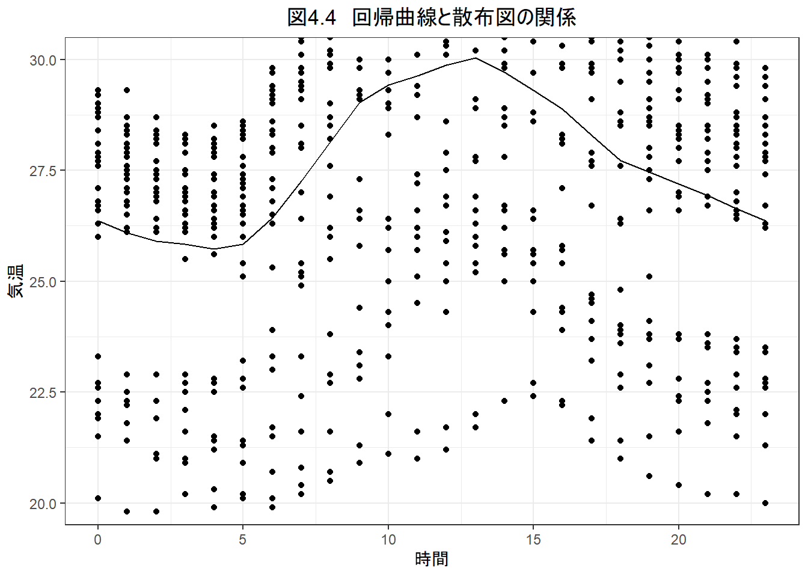

Week4 | Rによる自主勉強会
伊﨑 直志
2023年11月17日
準備
Loading Packages
library(tidyverse)## Warning: パッケージ 'tidyverse' はバージョン 4.1.3 の R の下で造られました## -- Attaching packages --------------------------------------- tidyverse 1.3.2 --
## v ggplot2 3.3.5 v purrr 0.3.4
## v tibble 3.1.8 v dplyr 1.0.10
## v tidyr 1.2.0 v stringr 1.4.0
## v readr 2.1.2 v forcats 0.5.1## Warning: パッケージ 'ggplot2' はバージョン 4.1.2 の R の下で造られました## Warning: パッケージ 'tidyr' はバージョン 4.1.3 の R の下で造られました## Warning: パッケージ 'readr' はバージョン 4.1.3 の R の下で造られました## Warning: パッケージ 'dplyr' はバージョン 4.1.3 の R の下で造られました## -- Conflicts ------------------------------------------ tidyverse_conflicts() --
## x dplyr::filter() masks stats::filter()
## x dplyr::lag() masks stats::lag()library(dplyr)
library(gridExtra)##
## 次のパッケージを付け加えます: 'gridExtra'
##
## 以下のオブジェクトは 'package:dplyr' からマスクされています:
##
## combinelibrary(readr)
library(lubridate)## Warning: パッケージ 'lubridate' はバージョン 4.1.3 の R の下で造られました##
## 次のパッケージを付け加えます: 'lubridate'
##
## 以下のオブジェクトは 'package:base' からマスクされています:
##
## date, intersect, setdiff, unionwindowsFonts(family_sans = windowsFont("Noto Sans JP Regular"))
par(family = "family_sans")
knitr::opts_chunk$set(echo = TRUE)第4章 回帰分析の基礎
4.1. 回帰分析の考え方
4.1.1. 回帰＝予測
回帰：「興味のある変数yの値を、他の変数xを用いて予測すること」
x-説明変数、独立変数
y-被説明変数、従属変数
回帰関数 regression function：xを用いて予測されたyの値 m(x)
誤差項 error term：回帰関数m(x)による予測の誤差 y-m(x)
4.1.2. 最小二乗法 least squares estimation
（例）教育年数xから賃金yを予測
予測誤差 prediction error をできるだけ小さく
⇒平均二乗誤差 mean squared errors: MSE
4.1.3. 条件付期待値と回帰分析
4.1.4. 数値例：気温と電力使用量
tempdata <- read_csv("temperature_aug.csv")## Rows: 744 Columns: 5
## -- Column specification --------------------------------------------------------
## Delimiter: ","
## chr (1): date
## dbl (4): time, elec, prec, temp
##
## i Use `spec()` to retrieve the full column specification for this data.
## i Specify the column types or set `show_col_types = FALSE` to quiet this message.ggplot(tempdata, aes(x = time, y = temp)) +
geom_point() +
labs(title = "図4.2 2014年8月の東京都における時刻と気温", x = "時刻", y = "気温") +
theme_bw(base_family = "family_sans") +
theme(plot.title = element_text(hjust = 0.5))4.1.5. データフレームとティブル
head(tempdata) #データフレーム：項目名と番号という枠（フレーム）を備えた、さまざまな属性のデータの塊| date | time | elec | prec | temp |
|---|---|---|---|---|
| 2014/8/1 | 0 | 3193 | 0 | 27.9 |
| 2014/8/1 | 1 | 2960 | 0 | 27.9 |
| 2014/8/1 | 2 | 2807 | 0 | 27.1 |
| 2014/8/1 | 3 | 2748 | 0 | 26.8 |
| 2014/8/1 | 4 | 2735 | 0 | 26.9 |
| 2014/8/1 | 5 | 2736 | 0 | 27.3 |
print(tempdata, n = 100)## # A tibble: 744 x 5
## date time elec prec temp
## <chr> <dbl> <dbl> <dbl> <dbl>
## 1 2014/8/1 0 3193 0 27.9
## 2 2014/8/1 1 2960 0 27.9
## 3 2014/8/1 2 2807 0 27.1
## 4 2014/8/1 3 2748 0 26.8
## 5 2014/8/1 4 2735 0 26.9
## 6 2014/8/1 5 2736 0 27.3
## 7 2014/8/1 6 2950 0 28.3
## 8 2014/8/1 7 3336 0 29.4
## 9 2014/8/1 8 3863 0 30.2
## 10 2014/8/1 9 4328 0 32.2
## 11 2014/8/1 10 4520 0 32.6
## 12 2014/8/1 11 4679 0 32.7
## 13 2014/8/1 12 4612 0 32.4
## 14 2014/8/1 13 4737 0 32.8
## 15 2014/8/1 14 4728 0 32.7
## 16 2014/8/1 15 4690 0 32.3
## 17 2014/8/1 16 4631 0 31.5
## 18 2014/8/1 17 4454 0 30.5
## 19 2014/8/1 18 4397 0 29.5
## 20 2014/8/1 19 4313 0 28.9
## 21 2014/8/1 20 4069 0 29.8
## 22 2014/8/1 21 3817 0 29
## 23 2014/8/1 22 3671 0 28
## 24 2014/8/1 23 3411 0 27.9
## 25 2014/8/2 0 3107 0 27.9
## 26 2014/8/2 1 2876 0 27.3
## 27 2014/8/2 2 2737 0 27.5
## 28 2014/8/2 3 2682 0 27.5
## 29 2014/8/2 4 2658 0 27.3
## 30 2014/8/2 5 2599 0 27.6
## 31 2014/8/2 6 2739 0 29.2
## 32 2014/8/2 7 3015 0 30.5
## 33 2014/8/2 8 3444 0 31.4
## 34 2014/8/2 9 3839 0 31.9
## 35 2014/8/2 10 4036 0 33.3
## 36 2014/8/2 11 4203 0 33.3
## 37 2014/8/2 12 4244 0 34.1
## 38 2014/8/2 13 4322 0 34.6
## 39 2014/8/2 14 4334 0 33.9
## 40 2014/8/2 15 4294 0 33.1
## 41 2014/8/2 16 4223 0 33.2
## 42 2014/8/2 17 4108 0 32.9
## 43 2014/8/2 18 4116 0 31.9
## 44 2014/8/2 19 4120 0 31.5
## 45 2014/8/2 20 3964 0 31.5
## 46 2014/8/2 21 3797 0 31
## 47 2014/8/2 22 3674 0 30.4
## 48 2014/8/2 23 3425 0 29.8
## 49 2014/8/3 0 3119 0 29.3
## 50 2014/8/3 1 2874 0 29.3
## 51 2014/8/3 2 2716 0 28.2
## 52 2014/8/3 3 2651 0 28.3
## 53 2014/8/3 4 2616 0 28.5
## 54 2014/8/3 5 2569 0 28.4
## 55 2014/8/3 6 2685 0 29.3
## 56 2014/8/3 7 2947 0 30.4
## 57 2014/8/3 8 3309 0 32
## 58 2014/8/3 9 3675 0 32.8
## 59 2014/8/3 10 3861 0 33.2
## 60 2014/8/3 11 3982 0 33.6
## 61 2014/8/3 12 4052 0 35
## 62 2014/8/3 13 4067 0 35.2
## 63 2014/8/3 14 4046 0 33.2
## 64 2014/8/3 15 3988 0 32.2
## 65 2014/8/3 16 3950 0 31.7
## 66 2014/8/3 17 3936 0 31.9
## 67 2014/8/3 18 4031 0 31
## 68 2014/8/3 19 4093 0 30.7
## 69 2014/8/3 20 3957 0 30.4
## 70 2014/8/3 21 3800 0 29.8
## 71 2014/8/3 22 3612 0 29.6
## 72 2014/8/3 23 3343 0 29.4
## 73 2014/8/4 0 3046 0 28.7
## 74 2014/8/4 1 2824 0 28.5
## 75 2014/8/4 2 2699 0 28.3
## 76 2014/8/4 3 2663 0 28.1
## 77 2014/8/4 4 2665 0 27.9
## 78 2014/8/4 5 2691 0 28.4
## 79 2014/8/4 6 2961 0 29.1
## 80 2014/8/4 7 3387 0 30.5
## 81 2014/8/4 8 3992 0 31.2
## 82 2014/8/4 9 4468 0 32.7
## 83 2014/8/4 10 4660 0 33.2
## 84 2014/8/4 11 4761 0 32.7
## 85 2014/8/4 12 4660 0 34.1
## 86 2014/8/4 13 4727 0 32.7
## 87 2014/8/4 14 4692 0 32
## 88 2014/8/4 15 4649 0 31.9
## 89 2014/8/4 16 4662 0 31.5
## 90 2014/8/4 17 4516 0 31.6
## 91 2014/8/4 18 4503 0 31.1
## 92 2014/8/4 19 4463 0 30.5
## 93 2014/8/4 20 4234 0 29.8
## 94 2014/8/4 21 3997 0 29.1
## 95 2014/8/4 22 3837 0 28.7
## 96 2014/8/4 23 3552 0 28.7
## 97 2014/8/5 0 3214 0 28.7
## 98 2014/8/5 1 2978 0 28.5
## 99 2014/8/5 2 2845 0 28.2
## 100 2014/8/5 3 2793 0 28.3
## # ... with 644 more rows
## # i Use `print(n = ...)` to see more rows#特定の行や列を抽出 [行, 列]
tempdata[3, ]| date | time | elec | prec | temp |
|---|---|---|---|---|
| 2014/8/1 | 2 | 2807 | 0 | 27.1 |
head(tempdata[, 2])| time |
|---|
| 0 |
| 1 |
| 2 |
| 3 |
| 4 |
| 5 |
tempdata[3, 2]| time |
|---|
| 2 |
tempdata$time## [1] 0 1 2 3 4 5 6 7 8 9 10 11 12 13 14 15 16 17 18 19 20 21 22 23 0
## [26] 1 2 3 4 5 6 7 8 9 10 11 12 13 14 15 16 17 18 19 20 21 22 23 0 1
## [51] 2 3 4 5 6 7 8 9 10 11 12 13 14 15 16 17 18 19 20 21 22 23 0 1 2
## [76] 3 4 5 6 7 8 9 10 11 12 13 14 15 16 17 18 19 20 21 22 23 0 1 2 3
## [101] 4 5 6 7 8 9 10 11 12 13 14 15 16 17 18 19 20 21 22 23 0 1 2 3 4
## [126] 5 6 7 8 9 10 11 12 13 14 15 16 17 18 19 20 21 22 23 0 1 2 3 4 5
## [151] 6 7 8 9 10 11 12 13 14 15 16 17 18 19 20 21 22 23 0 1 2 3 4 5 6
## [176] 7 8 9 10 11 12 13 14 15 16 17 18 19 20 21 22 23 0 1 2 3 4 5 6 7
## [201] 8 9 10 11 12 13 14 15 16 17 18 19 20 21 22 23 0 1 2 3 4 5 6 7 8
## [226] 9 10 11 12 13 14 15 16 17 18 19 20 21 22 23 0 1 2 3 4 5 6 7 8 9
## [251] 10 11 12 13 14 15 16 17 18 19 20 21 22 23 0 1 2 3 4 5 6 7 8 9 10
## [276] 11 12 13 14 15 16 17 18 19 20 21 22 23 0 1 2 3 4 5 6 7 8 9 10 11
## [301] 12 13 14 15 16 17 18 19 20 21 22 23 0 1 2 3 4 5 6 7 8 9 10 11 12
## [326] 13 14 15 16 17 18 19 20 21 22 23 0 1 2 3 4 5 6 7 8 9 10 11 12 13
## [351] 14 15 16 17 18 19 20 21 22 23 0 1 2 3 4 5 6 7 8 9 10 11 12 13 14
## [376] 15 16 17 18 19 20 21 22 23 0 1 2 3 4 5 6 7 8 9 10 11 12 13 14 15
## [401] 16 17 18 19 20 21 22 23 0 1 2 3 4 5 6 7 8 9 10 11 12 13 14 15 16
## [426] 17 18 19 20 21 22 23 0 1 2 3 4 5 6 7 8 9 10 11 12 13 14 15 16 17
## [451] 18 19 20 21 22 23 0 1 2 3 4 5 6 7 8 9 10 11 12 13 14 15 16 17 18
## [476] 19 20 21 22 23 0 1 2 3 4 5 6 7 8 9 10 11 12 13 14 15 16 17 18 19
## [501] 20 21 22 23 0 1 2 3 4 5 6 7 8 9 10 11 12 13 14 15 16 17 18 19 20
## [526] 21 22 23 0 1 2 3 4 5 6 7 8 9 10 11 12 13 14 15 16 17 18 19 20 21
## [551] 22 23 0 1 2 3 4 5 6 7 8 9 10 11 12 13 14 15 16 17 18 19 20 21 22
## [576] 23 0 1 2 3 4 5 6 7 8 9 10 11 12 13 14 15 16 17 18 19 20 21 22 23
## [601] 0 1 2 3 4 5 6 7 8 9 10 11 12 13 14 15 16 17 18 19 20 21 22 23 0
## [626] 1 2 3 4 5 6 7 8 9 10 11 12 13 14 15 16 17 18 19 20 21 22 23 0 1
## [651] 2 3 4 5 6 7 8 9 10 11 12 13 14 15 16 17 18 19 20 21 22 23 0 1 2
## [676] 3 4 5 6 7 8 9 10 11 12 13 14 15 16 17 18 19 20 21 22 23 0 1 2 3
## [701] 4 5 6 7 8 9 10 11 12 13 14 15 16 17 18 19 20 21 22 23 0 1 2 3 4
## [726] 5 6 7 8 9 10 11 12 13 14 15 16 17 18 19 20 21 22 23tempdata$time[3]## [1] 24.1.6. ノンパラメトリック回帰の実行
tempdata %>%
summarise(mean_temp = mean(temp))| mean_temp |
|---|
| 27.66841 |
tempdata %>%
summarise(mean_temp = mean(temp),
sd_temp = sd(temp),
max_temp = max(temp),
min_temp = min(temp))| mean_temp | sd_temp | max_temp | min_temp |
|---|---|---|---|
| 27.66841 | 3.545453 | 35.5 | 19.8 |
tempdata %>%
group_by(time) %>%
summarise(mean_temp = mean(temp))| time | mean_temp |
|---|---|
| 0 | 26.36129 |
| 1 | 26.09677 |
| 2 | 25.89677 |
| 3 | 25.83548 |
| 4 | 25.72581 |
| 5 | 25.83226 |
| 6 | 26.42581 |
| 7 | 27.25806 |
| 8 | 28.13548 |
| 9 | 29.03871 |
| 10 | 29.42258 |
| 11 | 29.62258 |
| 12 | 29.87419 |
| 13 | 30.03871 |
| 14 | 29.70645 |
| 15 | 29.30968 |
| 16 | 28.88065 |
| 17 | 28.29032 |
| 18 | 27.71613 |
| 19 | 27.45484 |
| 20 | 27.18710 |
| 21 | 26.93871 |
| 22 | 26.62903 |
| 23 | 26.36452 |
tempdata %>%
group_by(time) %>%
summarise(mean_temp = mean(temp)) %>%
ggplot(aes(x = time, y = mean_temp)) +
geom_line() +
labs(title = "図4.3 ノンパラメトリック回帰の結果", x = "時間", y = "気温") +
theme_bw() +
theme(plot.title = element_text(hjust = 0.5))tempdata %>%
ggplot(aes(x = time, y = temp)) +
stat_summary(geom = "line", fun = "mean") + #stat_summary(geom = , fun = ): 引数yに与えられた変数を対象にして、統計量を計算して描画
labs(title = "図4.3' ノンパラメトリック回帰の結果", x = "時間", y = "気温") +
theme_bw() +
theme(plot.title = element_text(hjust = 0.5))4.1.7. グラフを重ねる
tempdata %>%
ggplot(aes(x = time, y = temp)) +
geom_point() +
stat_summary(geom = "line", fun = "mean") +
labs(title = "図4.4 回帰曲線と散布図の関係", x = "時間", y = "気温") +
coord_cartesian(ylim = c(20, 30)) +
theme_bw() +
theme(plot.title = element_text(hjust = 0.5))
4.2. 単回帰分析
4.2.1. ノンパラメトリック回帰の限界
with(tempdata, cor(temp, elec))## [1] 0.7198181tempdata %>%
summarise(cor(temp, elec))| cor(temp, elec) |
|---|
| 0.7198181 |
tempdata %>%
with(cor(temp, elec))## [1] 0.7198181tempdata %>%
ggplot(aes(x = temp, y = elec)) +
stat_summary(geom = "line", fun = "mean") +
labs(title = "図4.6 電気使用量の回帰曲線",
x = "電気使用量の回帰曲線", y = "電気使用量（万kw）") +
theme_bw() +
theme(plot.title = element_text(hjust = 0.5))4.2.3. 単回帰の計算方法
（略）
4.2.4. Rによる線形回帰分析
lm(elec ~ temp, data = tempdata)##
## Call:
## lm(formula = elec ~ temp, data = tempdata)
##
## Coefficients:
## (Intercept) temp
## -614.3 145.04.2.5. 推定量と推定値
4.2.6. 単回帰の図示
result <- lm(elec ~ temp,
data = tempdata)
result$coefficients## (Intercept) temp
## -614.2722 145.0303tempdata %>%
ggplot(aes(x = temp, y = elec)) +
geom_point() +
geom_abline(intercept = result$coefficients[1],
slope = result$coefficients[2]) +
labs(title = "図4.7 単回帰の結果", x ="気温", y = "電気使用量（万kw）") +
theme_bw() +
theme(plot.title = element_text(hjust = 0.5))4.3. 重回帰分析
4.3.1. 説明変数を追加する
tempdata %>%
ggplot(aes(x = time, y = elec)) +
geom_point() +
labs(title = "図4.8 電力使用量の時間推移", x = "時刻", y = "電気使用量（万kw）") +
theme_bw() +
theme(plot.title = element_text(hjust = 0.5))tempdata$daytime <-
(tempdata$time >= 9) & (tempdata$time <= 18)
tempdata <- tempdata %>%
mutate(daytime = 1 * (9 <= time & time <= 18),
elec100 = elec / 100,
time12 = time %% 12,
ampm = ifelse(time < 12, "a.m.", "p.m."))4.3.2. 重回帰分析
4.3.3. Rによる重回帰分析
lm(elec ~ temp + daytime, data = tempdata)##
## Call:
## lm(formula = elec ~ temp + daytime, data = tempdata)
##
## Coefficients:
## (Intercept) temp daytime
## -69.55 116.98 555.44lm(elec ~ temp + daytime + prec, data = tempdata)##
## Call:
## lm(formula = elec ~ temp + daytime + prec, data = tempdata)
##
## Coefficients:
## (Intercept) temp daytime prec
## -64.503 116.802 556.148 -3.366tempdata %>%
mutate(sunday = 1 *
(date == "2014/8/3") |
(date == "2014/8/10") |
(date == "2014/8/17") |
(date == "2014/8/24") |
(date == "2014/8/31")) %>%
head()| date | time | elec | prec | temp | daytime | elec100 | time12 | ampm | sunday |
|---|---|---|---|---|---|---|---|---|---|
| 2014/8/1 | 0 | 3193 | 0 | 27.9 | 0 | 31.93 | 0 | a.m. | FALSE |
| 2014/8/1 | 1 | 2960 | 0 | 27.9 | 0 | 29.60 | 1 | a.m. | FALSE |
| 2014/8/1 | 2 | 2807 | 0 | 27.1 | 0 | 28.07 | 2 | a.m. | FALSE |
| 2014/8/1 | 3 | 2748 | 0 | 26.8 | 0 | 27.48 | 3 | a.m. | FALSE |
| 2014/8/1 | 4 | 2735 | 0 | 26.9 | 0 | 27.35 | 4 | a.m. | FALSE |
| 2014/8/1 | 5 | 2736 | 0 | 27.3 | 0 | 27.36 | 5 | a.m. | FALSE |
tempdata <- tempdata %>%
mutate(date = ymd(date))
tempdata %>% print(n = 4)## # A tibble: 744 x 9
## date time elec prec temp daytime elec100 time12 ampm
## <date> <dbl> <dbl> <dbl> <dbl> <dbl> <dbl> <dbl> <chr>
## 1 2014-08-01 0 3193 0 27.9 0 31.9 0 a.m.
## 2 2014-08-01 1 2960 0 27.9 0 29.6 1 a.m.
## 3 2014-08-01 2 2807 0 27.1 0 28.1 2 a.m.
## 4 2014-08-01 3 2748 0 26.8 0 27.5 3 a.m.
## # ... with 740 more rows
## # i Use `print(n = ...)` to see more rowswday(tempdata$date, label = TRUE)## [1] 金 金 金 金 金 金 金 金 金 金 金 金 金 金 金 金 金 金 金 金 金 金 金 金 土
## [26] 土 土 土 土 土 土 土 土 土 土 土 土 土 土 土 土 土 土 土 土 土 土 土 日 日
## [51] 日 日 日 日 日 日 日 日 日 日 日 日 日 日 日 日 日 日 日 日 日 日 月 月 月
## [76] 月 月 月 月 月 月 月 月 月 月 月 月 月 月 月 月 月 月 月 月 月 火 火 火 火
## [101] 火 火 火 火 火 火 火 火 火 火 火 火 火 火 火 火 火 火 火 火 水 水 水 水 水
## [126] 水 水 水 水 水 水 水 水 水 水 水 水 水 水 水 水 水 水 水 木 木 木 木 木 木
## [151] 木 木 木 木 木 木 木 木 木 木 木 木 木 木 木 木 木 木 金 金 金 金 金 金 金
## [176] 金 金 金 金 金 金 金 金 金 金 金 金 金 金 金 金 金 土 土 土 土 土 土 土 土
## [201] 土 土 土 土 土 土 土 土 土 土 土 土 土 土 土 土 日 日 日 日 日 日 日 日 日
## [226] 日 日 日 日 日 日 日 日 日 日 日 日 日 日 日 月 月 月 月 月 月 月 月 月 月
## [251] 月 月 月 月 月 月 月 月 月 月 月 月 月 月 火 火 火 火 火 火 火 火 火 火 火
## [276] 火 火 火 火 火 火 火 火 火 火 火 火 火 水 水 水 水 水 水 水 水 水 水 水 水
## [301] 水 水 水 水 水 水 水 水 水 水 水 水 木 木 木 木 木 木 木 木 木 木 木 木 木
## [326] 木 木 木 木 木 木 木 木 木 木 木 金 金 金 金 金 金 金 金 金 金 金 金 金 金
## [351] 金 金 金 金 金 金 金 金 金 金 土 土 土 土 土 土 土 土 土 土 土 土 土 土 土
## [376] 土 土 土 土 土 土 土 土 土 日 日 日 日 日 日 日 日 日 日 日 日 日 日 日 日
## [401] 日 日 日 日 日 日 日 日 月 月 月 月 月 月 月 月 月 月 月 月 月 月 月 月 月
## [426] 月 月 月 月 月 月 月 火 火 火 火 火 火 火 火 火 火 火 火 火 火 火 火 火 火
## [451] 火 火 火 火 火 火 水 水 水 水 水 水 水 水 水 水 水 水 水 水 水 水 水 水 水
## [476] 水 水 水 水 水 木 木 木 木 木 木 木 木 木 木 木 木 木 木 木 木 木 木 木 木
## [501] 木 木 木 木 金 金 金 金 金 金 金 金 金 金 金 金 金 金 金 金 金 金 金 金 金
## [526] 金 金 金 土 土 土 土 土 土 土 土 土 土 土 土 土 土 土 土 土 土 土 土 土 土
## [551] 土 土 日 日 日 日 日 日 日 日 日 日 日 日 日 日 日 日 日 日 日 日 日 日 日
## [576] 日 月 月 月 月 月 月 月 月 月 月 月 月 月 月 月 月 月 月 月 月 月 月 月 月
## [601] 火 火 火 火 火 火 火 火 火 火 火 火 火 火 火 火 火 火 火 火 火 火 火 火 水
## [626] 水 水 水 水 水 水 水 水 水 水 水 水 水 水 水 水 水 水 水 水 水 水 水 木 木
## [651] 木 木 木 木 木 木 木 木 木 木 木 木 木 木 木 木 木 木 木 木 木 木 金 金 金
## [676] 金 金 金 金 金 金 金 金 金 金 金 金 金 金 金 金 金 金 金 金 金 土 土 土 土
## [701] 土 土 土 土 土 土 土 土 土 土 土 土 土 土 土 土 土 土 土 土 日 日 日 日 日
## [726] 日 日 日 日 日 日 日 日 日 日 日 日 日 日 日 日 日 日 日
## Levels: 日 < 月 < 火 < 水 < 木 < 金 < 土tempdata <- tempdata %>%
mutate(dow = wday(date, label = TRUE),
sunday = 1 * (dow == "日"))
tempdata <- tempdata %>%
mutate(recess = 1 * ("2014-08-11" <= date &
date <= "2014-08-16"))
lm(elec ~ temp + daytime + prec + sunday + recess,
data = tempdata)##
## Call:
## lm(formula = elec ~ temp + daytime + prec + sunday + recess,
## data = tempdata)
##
## Coefficients:
## (Intercept) temp daytime prec sunday recess
## 179.07 113.48 563.53 14.27 -448.39 -438.23179.07 + 113.48 * 28 + 563.53 * 1 + 14.27 * 0 - 448.39 * 0 - 438.23 * 0## [1] 3920.04result <- lm(elec ~ temp + daytime + prec + sunday + recess, data = tempdata)
sum(result$coefficients * c(1, 28, 1, 0, 0, 0))## [1] 3919.964補足：多重共線性
4.4. 決定係数と回帰分析
4.4.1. 決定計数
決定係数R^2
4.4.2. 決定係数の出力
lm(elec ~ temp + daytime + prec + sunday + recess,
data = tempdata) %>%
summary()##
## Call:
## lm(formula = elec ~ temp + daytime + prec + sunday + recess,
## data = tempdata)
##
## Residuals:
## Min 1Q Median 3Q Max
## -825.22 -289.33 1.57 270.66 999.57
##
## Coefficients:
## Estimate Std. Error t value Pr(>|t|)
## (Intercept) 179.071 114.088 1.570 0.117
## temp 113.477 4.193 27.066 <2e-16 ***
## daytime 563.528 29.716 18.964 <2e-16 ***
## prec 14.275 14.701 0.971 0.332
## sunday -448.392 38.125 -11.761 <2e-16 ***
## recess -438.230 35.199 -12.450 <2e-16 ***
## ---
## Signif. codes: 0 '***' 0.001 '**' 0.01 '*' 0.05 '.' 0.1 ' ' 1
##
## Residual standard error: 370.3 on 738 degrees of freedom
## Multiple R-squared: 0.7331, Adjusted R-squared: 0.7313
## F-statistic: 405.5 on 5 and 738 DF, p-value: < 2.2e-16lm(elec ~ temp,
data = tempdata) %>%
summary()##
## Call:
## lm(formula = elec ~ temp, data = tempdata)
##
## Residuals:
## Min 1Q Median 3Q Max
## -1105.11 -421.64 11.39 394.19 1065.64
##
## Coefficients:
## Estimate Std. Error t value Pr(>|t|)
## (Intercept) -614.272 143.223 -4.289 2.03e-05 ***
## temp 145.030 5.134 28.246 < 2e-16 ***
## ---
## Signif. codes: 0 '***' 0.001 '**' 0.01 '*' 0.05 '.' 0.1 ' ' 1
##
## Residual standard error: 496.2 on 742 degrees of freedom
## Multiple R-squared: 0.5181, Adjusted R-squared: 0.5175
## F-statistic: 797.9 on 1 and 742 DF, p-value: < 2.2e-164.4.3. 決定係数は「モデルの正しさ」を保証しない
set.seed(2022) #set.seed(): 常に同じ乱数を発生, 解析ごとに結果が変わってしまうことを防止
a <- sample(1:6, 15, replace = TRUE)
b <- sample(1:6, 15, replace = TRUE)
c <- sample(1:6, 15, replace = TRUE)
d <- sample(1:6, 15, replace = TRUE)
e <- sample(1:6, 15, replace = TRUE)
f <- sample(1:6, 15, replace = TRUE)
g <- sample(1:6, 15, replace = TRUE)
summary(lm(a ~ b + c + d + e + f + g))##
## Call:
## lm(formula = a ~ b + c + d + e + f + g)
##
## Residuals:
## Min 1Q Median 3Q Max
## -1.6875 -0.8476 0.2100 0.6657 1.9867
##
## Coefficients:
## Estimate Std. Error t value Pr(>|t|)
## (Intercept) 5.97169 1.97662 3.021 0.0165 *
## b 0.01211 0.34577 0.035 0.9729
## c -0.27789 0.31640 -0.878 0.4054
## d 0.37124 0.31947 1.162 0.2787
## e -0.30285 0.22822 -1.327 0.2211
## f -0.52931 0.27004 -1.960 0.0856 .
## g 0.30288 0.26822 1.129 0.2915
## ---
## Signif. codes: 0 '***' 0.001 '**' 0.01 '*' 0.05 '.' 0.1 ' ' 1
##
## Residual standard error: 1.328 on 8 degrees of freedom
## Multiple R-squared: 0.618, Adjusted R-squared: 0.3316
## F-statistic: 2.157 on 6 and 8 DF, p-value: 0.1552- 過剰適合（overfitting）, 過学習
- どの説明変数をモデルに含めるべきか？
- 先験的モデル
- 「モデル推定用」標本と「モデル検証用」標本
- 情報量基準 e.g. Akaike Information Criterion: AIC
補足: 残差の性質と回帰係数の計算公式
tempdata <- read_csv("temperature_aug.csv")## Rows: 744 Columns: 5
## -- Column specification --------------------------------------------------------
## Delimiter: ","
## chr (1): date
## dbl (4): time, elec, prec, temp
##
## i Use `spec()` to retrieve the full column specification for this data.
## i Specify the column types or set `show_col_types = FALSE` to quiet this message.result <- lm(elec ~ temp,
data = tempdata)
ehat <- result$residuals
sum(ehat)## [1] 2.615153e-11sum(tempdata$temp*ehat)## [1] 1.093596e-09練習問題
問題4.1.
library(dplyr)
library(lubridate)
library(broom)## Warning: パッケージ 'broom' はバージョン 4.1.3 の R の下で造られましたelecdata <- read.csv("temperature_aug.csv")問題4.1.1.
elecdata <- read.csv("temperature_aug.csv")
elecdata <- elecdata %>%
mutate(morning = 1 * (6 <= time & time <= 12),
afternoon = 1 * (13 <= time & time <= 18))
elecdata %>%
select(time, morning, afternoon) %>%
head()| time | morning | afternoon |
|---|---|---|
| 0 | 0 | 0 |
| 1 | 0 | 0 |
| 2 | 0 | 0 |
| 3 | 0 | 0 |
| 4 | 0 | 0 |
| 5 | 0 | 0 |
問題4.1.2.
elecdata <- elecdata %>%
mutate(date = ymd(date),
dow = wday(date, label = TRUE),
saturday = 1 * (dow == "土"))問題4.1.3.
elecdata <- elecdata %>%
mutate(sunday = 1*(dow == "日"),
recess = 1*("2014-08-11" <= date & date <= "2014-08-16"))
elecdata %>%
lm(elec ~ temp + prec + sunday +
recess + morning + afternoon + saturday, data =.) %>%
tidy()| term | estimate | std.error | statistic | p.value |
|---|---|---|---|---|
| (Intercept) | 88.88949 | 119.530477 | 0.7436555 | 0.4573223 |
| temp | 119.71173 | 4.357246 | 27.4741703 | 0.0000000 |
| prec | 25.19906 | 15.336192 | 1.6431105 | 0.1007872 |
| sunday | -497.75053 | 40.694668 | -12.2313452 | 0.0000000 |
| recess | -446.60967 | 36.747890 | -12.1533417 | 0.0000000 |
| morning | 201.87023 | 34.799579 | 5.8009388 | 0.0000000 |
| afternoon | 571.84483 | 37.086540 | 15.4192015 | 0.0000000 |
| saturday | -256.12187 | 39.715761 | -6.4488722 | 0.0000000 |
問題4.1.4.
elecdata %>%
lm(elec ~ temp + prec + sunday +
recess + morning + afternoon + saturday,
data = .) %>%
glance() %>%
pull(r.squared)## [1] 0.7103612問題4.2.
問題4.2.1.
icedata <- read.csv("icecream.csv")
icedata %>%
ggplot(aes(x = income, y = icecream)) +
geom_point() +
geom_smooth(method = "lm", se = FALSE) +
labs(title = "問題4.2.1 回帰直線（アイスクリームの年間消費額 ~ 年間所得）",
x = "年間所得（円）", y = "アイスクリームの年間消費額（円）") +
theme_bw() +
theme(plot.title = element_text(hjust = 0.5))## `geom_smooth()` using formula 'y ~ x'問題4.2.2.
icedata <- read.csv("icecream.csv")
icedata %>%
lm(icecream ~ income + u15, data =.) %>%
glance %>%
pull(r.squared)## [1] 0.2040664問題4.3.
wagedata <- read.csv("wage.csv")問題4.3.1.
wagedata <- read.csv("wage.csv")
wagedata %>%
lm(log(wage) ~ educ, data =.) %>%
augment() %>%
ggplot(aes(x = educ, y = `log(wage)`)) +
geom_point() +
geom_line(colour = "blue", aes(y = .fitted)) +
labs(title = "問題4.3.1 回帰直線（賃金（時給） ~ 教育を受けた年数）",
x = "教育を受けた年数（年）", y = "賃金（時給）（円）") +
theme_bw() +
theme(plot.title = element_text(hjust = 0.5))
問題4.3.2.
wagedata <- read.csv("wage.csv")
wagedata %>%
lm(log(wage) ~ educ + exper, data = .) %>%
tidy()| term | estimate | std.error | statistic | p.value |
|---|---|---|---|---|
| (Intercept) | 4.6660344 | 0.0637900 | 73.14680 | 0 |
| educ | 0.0931680 | 0.0036118 | 25.79581 | 0 |
| exper | 0.0406574 | 0.0023344 | 17.41658 | 0 |